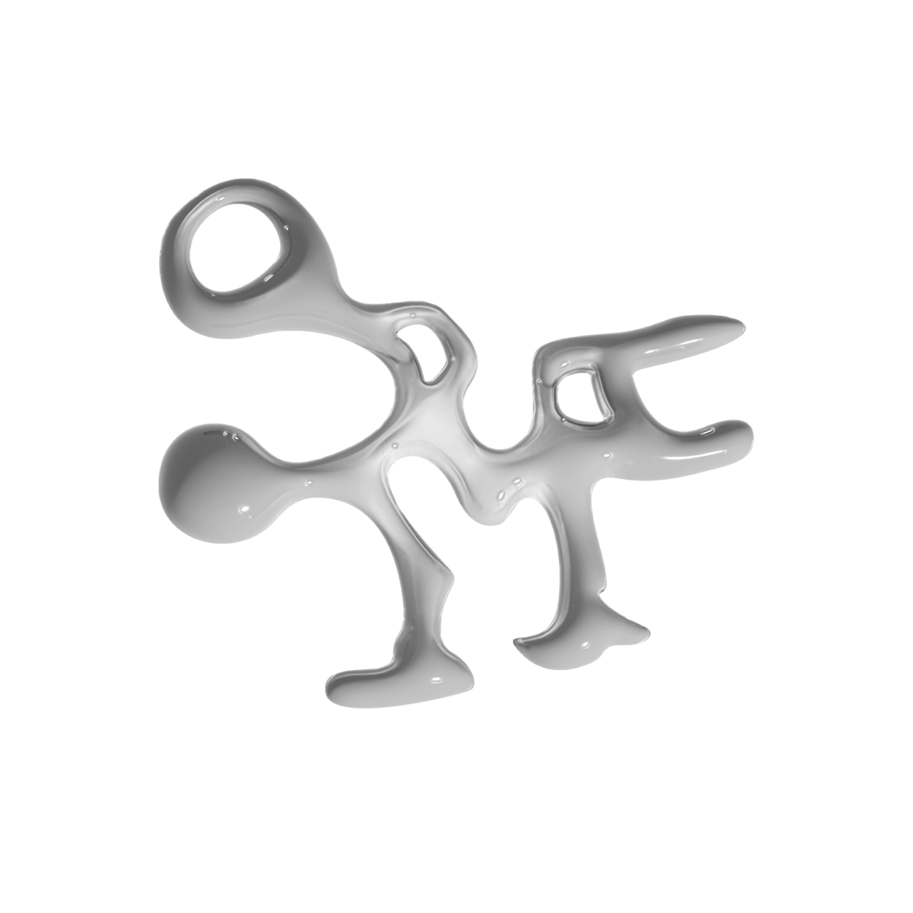

Sustainable Ocean Alliance
Empoderando comunidades para proteger y restaurar los ecosistemas oceánicos a través de la ciencia, la tecnología y la conservación culturalmente arraigada.
Somos un colectivo de científicos emergentes, estudiantes y conservacionistas con trasfondos transdisciplinarios, unidos por un compromiso compartido de proteger los ecosistemas oceánicos de Puerto Rico.
Combinando ciencias marinas, tecnología y conocimiento comunitario, tomamos un enfoque integrado hacia la conservación.
Servimos al pueblo de Puerto Rico y el Caribe, trabajando junto a comunidades costeras, científicos y organizaciones locales para proteger y restaurar nuestros ecosistemas oceánicos.
Nuestra visión es un futuro donde las comunidades de Puerto Rico toman un rol activo en la conservación y restauración de los ecosistemas oceánicos como parte de su herencia cultural.
SOA Puerto Rico se dedica a empoderar comunidades para proteger y restaurar los ecosistemas oceánicos, fomentando una conexión profunda entre las personas y el mar. A través de metodologías innovadoras como la restauración asistida por AI, iniciativas de acción climática y conservación culturalmente arraigada, trabajamos para que la custodia del océano sea una responsabilidad compartida, protegiendo los recursos marinos para las futuras generaciones.
Proteger los ecosistemas costeros y marinos a través de acción comunitaria directa y custodia culturalmente arraigada.
Aprovechar la restauración asistida por AI y tecnología innovadora para el monitoreo ambiental y la custodia oceánica.
Integrar el conocimiento local y la herencia cultural en las estrategias de conservación junto a las comunidades costeras.
Aplicación de inteligencia artificial y metodologías innovadoras para el monitoreo de arrecifes de coral, identificación de especies y análisis de datos ambientales en tiempo real.
Impulsando iniciativas de acción climática que abordan los desafíos únicos que enfrentan los ecosistemas costeros y las comunidades isleñas de Puerto Rico.
Involucrando a las comunidades en la recolección de datos científicos y el monitoreo participativo de nuestros océanos y costas bajo un modelo de responsabilidad compartida.
Asegurando que la custodia oceánica esté arraigada en la herencia cultural de Puerto Rico, haciendo de la conservación una responsabilidad comunitaria compartida entre generaciones.

Sé parte del colectivo que empodera a las comunidades costeras de Puerto Rico para conservar y restaurar nuestros ecosistemas marinos — integrando ciencia, tecnología y herencia cultural.